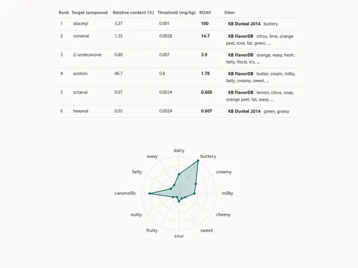
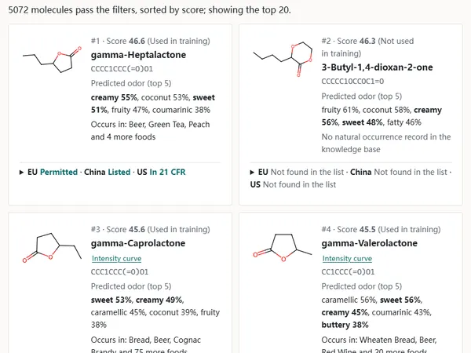
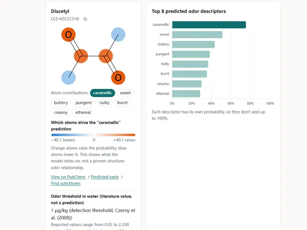
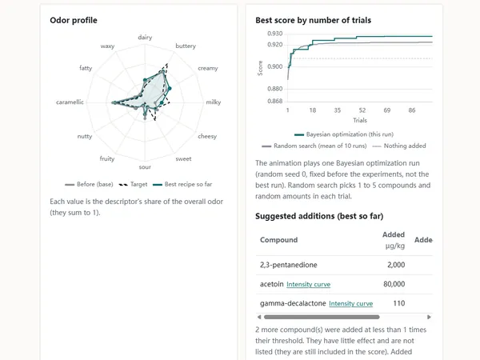
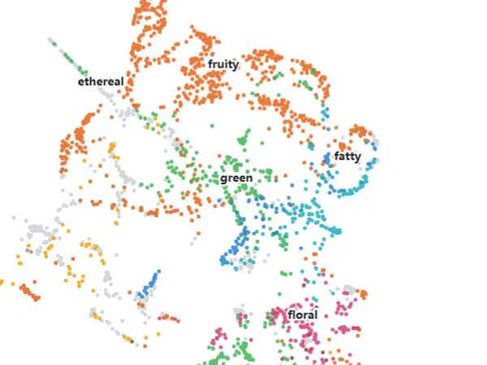
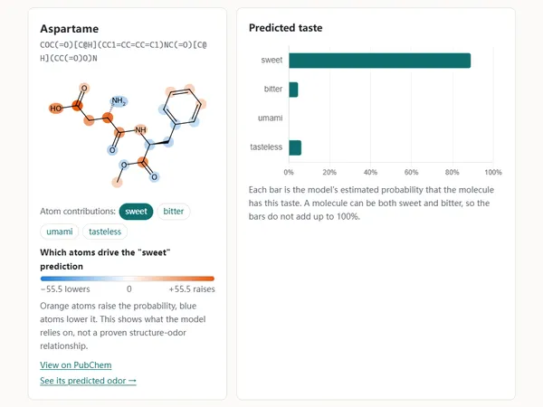
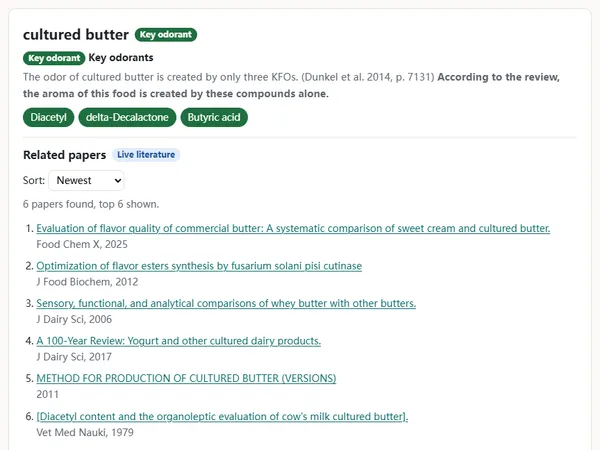

上传一个样品的峰表，按 OAV 或 ROAV 排出关键风味物质；兼容多种仪器的导出格式，数据只在浏览器里处理。
工具方法与来源

按想要和不想要的气味描述词，从 5000 多个分子里找原料；也能给一个分子找气味相近、结构不同的替代物。

输入分子名称、CAS 号或 SMILES，用图神经网络预测它最可能的气味描述词。

用虚拟评价函数演示贝叶斯优化怎样调整乳品风味；也能把自己的样品和目标样品对比，找出差距。

5000 多个分子按预测气味排成一张可缩放的地图，切换成按结构排列，可以对比“闻起来像”和“长得像”。

用图神经网络判断一个小分子是甜、苦、鲜还是无味。

按食品或化合物查关键风味物质、检出物质和相关文献；按名称、CAS 或 FEMA 号查香料在中国、欧盟、美国的法规状态。